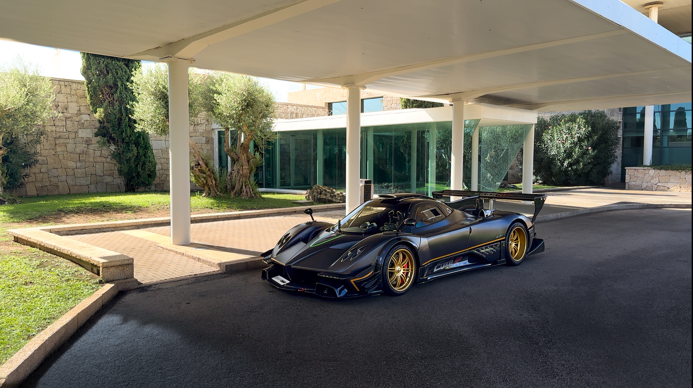
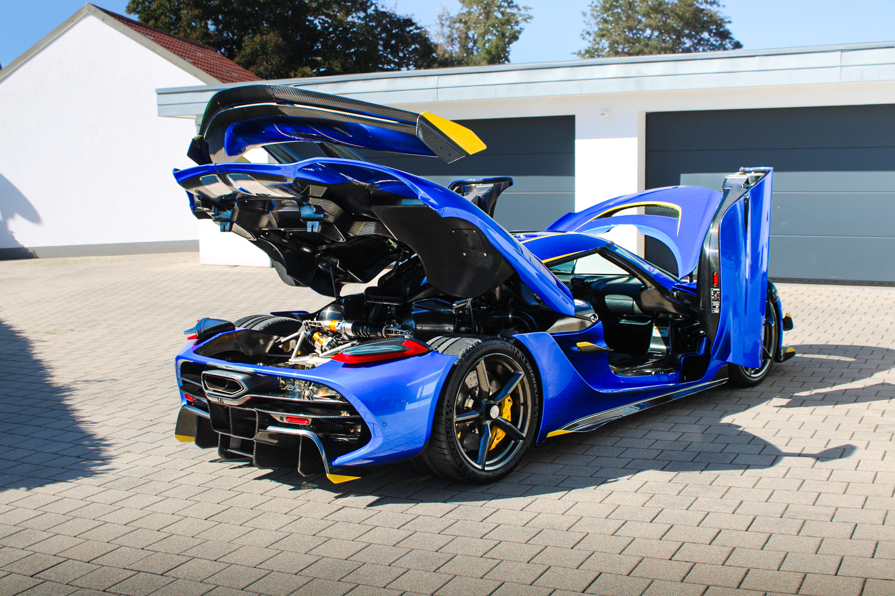
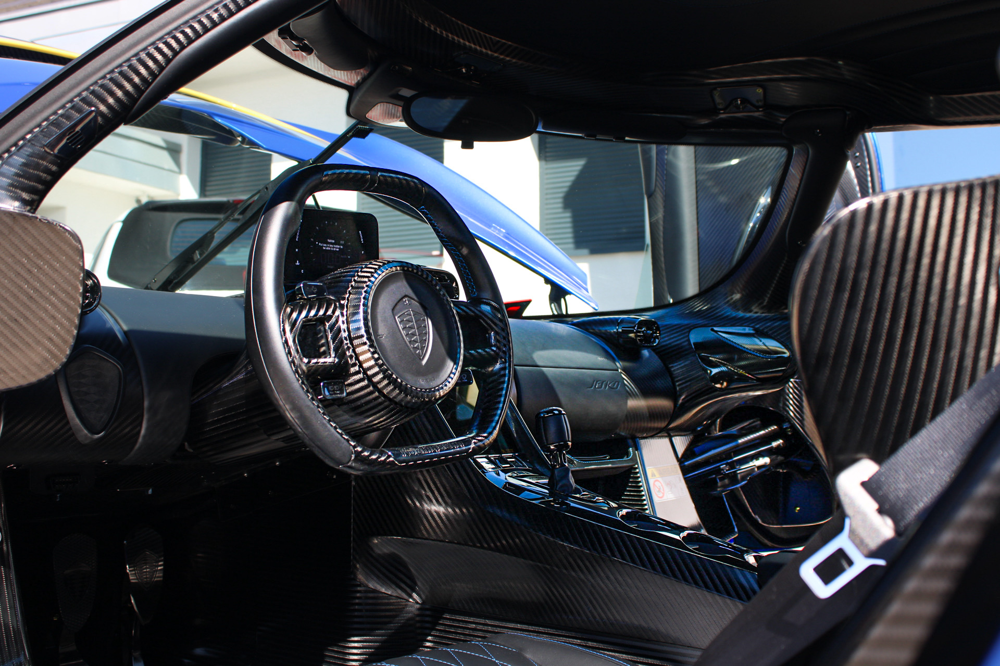
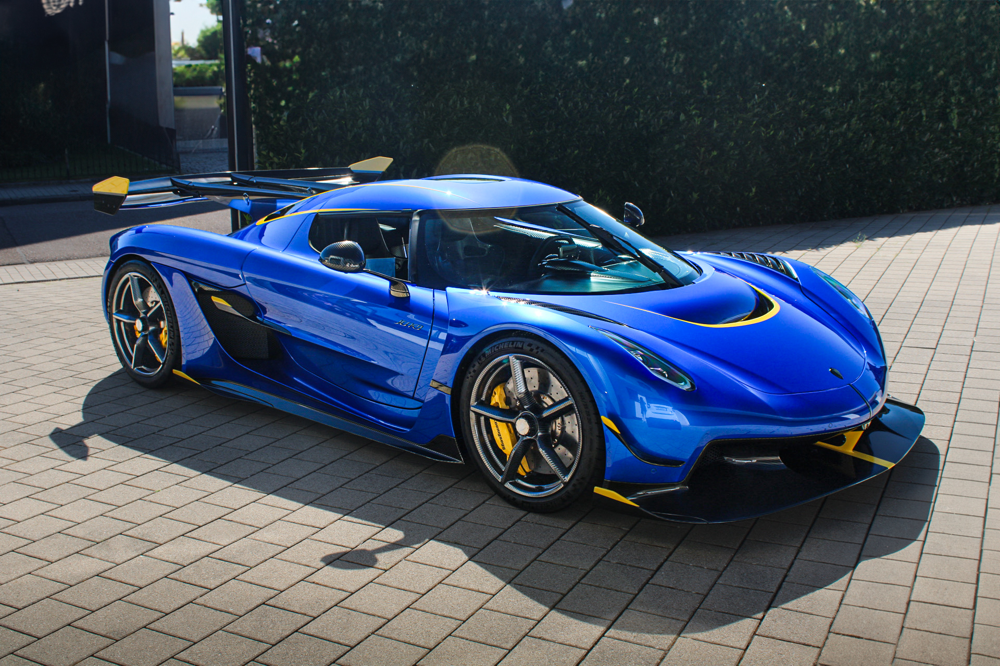
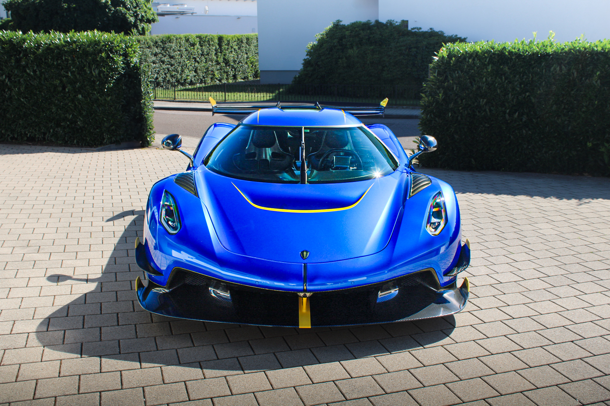

Portfolio
Explore my latest automotive photography work:






Rising Automotive Photographer
Explore my latest automotive photography work:





Welcome to my portfolio as a rising automotive photographer. I specialize in capturing the beauty, power, and elegance of automotive design through stunning photography.
Based in Germany, I focus on creating professional automotive imagery that showcases the finest details and characteristics of every vehicle.